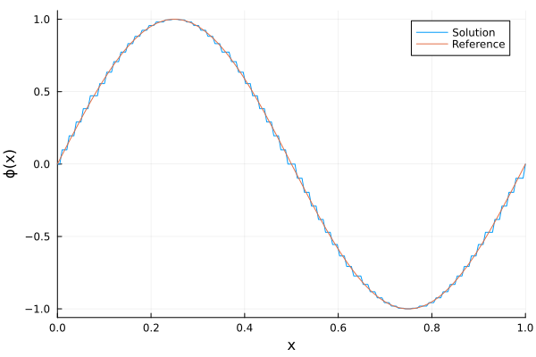
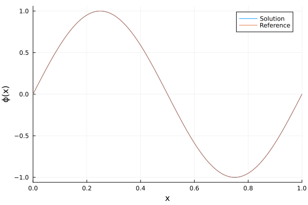
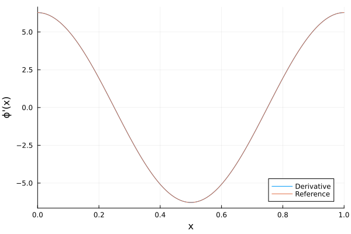
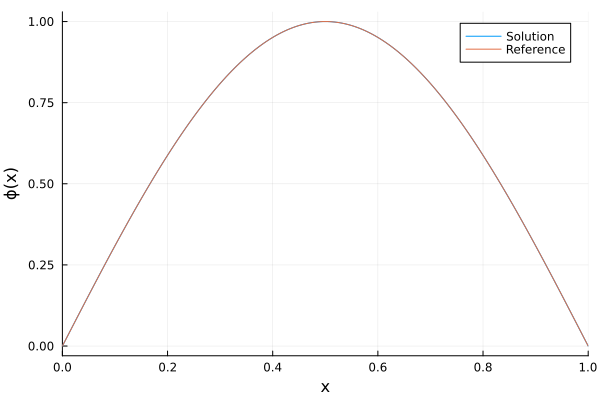

Poisson Solvers
Solve
\[- \Delta \phi(x) = f(x)\]
in one dimension, with a spectral or a matrix-free finite-difference solver on a uniform periodic grid, or with a B-spline Galerkin solver. A Potential pairs the solution with the solver that produced it, so that it can be re-solved in place as the source changes.
Evaluate a potential with p(x), and its d-th derivative with p(x, d).
using Plots
using PoissonSolvers
sol(x) = sin(2π * x)
der(x) = 2π * cos(2π * x)
rhs(x) = 4π^2 * sin(2π * x)
domain = (0.0, 1.0)
x = LinRange(domain[begin], domain[end], 200)200-element LinRange{Float64, Int64}:
0.0, 0.00502513, 0.0100503, 0.0150754, …, 0.984925, 0.98995, 0.994975, 1.0FFT Solver
The grid solver is spectral in the coefficients, but evaluates at the nearest grid point, so the plotted curve is a staircase of width Δx.
b = FFTWBasis(domain, 64)
p = Potential(b, rhs)Potential{PoissonSolvers.FFTWSolution{Vector{Float64}, FFTWBasis{Float64, StepRangeLen{Float64, Base.TwicePrecision{Float64}, Base.TwicePrecision{Float64}, Int64}}}, PoissonSolverFFT{Float64, FFTWBasis{Float64, StepRangeLen{Float64, Base.TwicePrecision{Float64}, Base.TwicePrecision{Float64}, Int64}}, FFTW.rFFTWPlan{Float64, -1, false, 1, Tuple{Int64}}, AbstractFFTs.ScaledPlan{ComplexF64, FFTW.rFFTWPlan{ComplexF64, 1, false, 1, UnitRange{Int64}}, Float64}}, Vector{Float64}}(PoissonSolvers.FFTWSolution{Vector{Float64}, FFTWBasis{Float64, StepRangeLen{Float64, Base.TwicePrecision{Float64}, Base.TwicePrecision{Float64}, Int64}}}(FFTWBasis{Float64, StepRangeLen{Float64, Base.TwicePrecision{Float64}, Base.TwicePrecision{Float64}, Int64}}((0.0, 1.0), 0.0:0.015625:1.0, 0.015625), [-1.3392341810760245e-16, 0.09801714032956048, 0.19509032201612814, 0.2902846772544623, 0.38268343236508967, 0.47139673682599753, 0.5555702330196021, 0.6343932841636454, 0.7071067811865475, 0.7730104533627369 … -0.8314696123025453, -0.7730104533627371, -0.7071067811865477, -0.6343932841636456, -0.5555702330196023, -0.47139673682599775, -0.3826834323650899, -0.2902846772544625, -0.19509032201612841, -0.09801714032956074]), PoissonSolverFFT{Float64, FFTWBasis{Float64, StepRangeLen{Float64, Base.TwicePrecision{Float64}, Base.TwicePrecision{Float64}, Int64}}, FFTW.rFFTWPlan{Float64, -1, false, 1, Tuple{Int64}}, AbstractFFTs.ScaledPlan{ComplexF64, FFTW.rFFTWPlan{ComplexF64, 1, false, 1, UnitRange{Int64}}, Float64}}(FFTWBasis{Float64, StepRangeLen{Float64, Base.TwicePrecision{Float64}, Base.TwicePrecision{Float64}, Int64}}((0.0, 1.0), 0.0:0.015625:1.0, 0.015625), FFTW real-to-complex plan for 64-element array of Float64
(rdft2-r2hc-direct-64 "r2cf_64"), 0.015625 * FFTW complex-to-real plan for 33-element array of ComplexF64
(rdft2-hc2r-direct-64 "r2cb_64"), [0.0, 0.025330295910584444, 0.006332573977646111, 0.0028144773233982714, 0.0015831434944115277, 0.0010132118364233778, 0.0007036193308495678, 0.0005169448145017233, 0.00039578587360288194, 0.00031271970259980796 … 4.788335710885529e-5, 4.397620817809799e-5, 4.052847345693511e-5, 3.747085193873438e-5, 3.4746633622200886e-5, 3.230905090635771e-5, 3.0119257919838814e-5, 2.8144773233982723e-5, 2.6358268377299114e-5, 2.473661710018012e-5], ComplexF64[0.0 + 0.0im, -4.299339575620032e-15 - 32.0im, -6.125206681782853e-17 - 3.854178191371115e-16im, -6.087436351144207e-17 - 2.026477856188795e-16im, 2.2213370792295974e-18 - 7.889752062502751e-17im, 6.166910423976222e-17 - 5.0081560096837867e-17im, 3.201180578720749e-17 + 5.3981048515317e-19im, 1.184932856688489e-17 + 1.881940566350671e-17im, 4.733055561345467e-18 + 1.3578636865187278e-17im, 7.322116512088635e-18 - 2.2165481148044987e-17im … 1.3369965518648538e-18 + 6.812993106208358e-18im, -4.1314023200665753e-19 + 2.5885841877639575e-19im, 1.1515928218213234e-18 + 8.994971558935005e-19im, -7.867876576046666e-19 + 1.3685364579246387e-18im, -1.5941950924830796e-18 + 4.823478967095653e-19im, 9.082052476721393e-20 - 3.166182686316005e-21im, -8.159711654263059e-19 + 1.243640171080903e-18im, -1.2652387428845249e-18 - 5.591680267249299e-22im, -1.662229887809953e-19 + 0.0im, -2.978456462313027e-19 + 0.0im]), [0.0, 0.0, 0.0, 0.0, 0.0, 0.0, 0.0, 0.0, 0.0, 0.0 … 0.0, 0.0, 0.0, 0.0, 0.0, 0.0, 0.0, 0.0, 0.0, 0.0])plot(xlabel = "x", ylabel = "ϕ(x)")
plot!(x, p.(x); xlims = domain, label = "Solution")
plot!(x, sol.(x); xlims = domain, label = "Reference")
Matrix-Free Solver
The matrix-free solver uses the same grid, and applies a central difference stencil of order 2 or 4 by conjugate gradients rather than a transform. Its solution evaluates like the FFT solver's.
b = FiniteDifferenceBasis(domain, 64; order = 4)
p = Potential(b, rhs)Potential{PoissonSolvers.FFTWSolution{Vector{Float64}, FiniteDifferenceBasis{Float64, StepRangeLen{Float64, Base.TwicePrecision{Float64}, Base.TwicePrecision{Float64}, Int64}}}, PoissonSolverMatrixFree{Float64, FiniteDifferenceBasis{Float64, StepRangeLen{Float64, Base.TwicePrecision{Float64}, Base.TwicePrecision{Float64}, Int64}}}, Vector{Float64}}(PoissonSolvers.FFTWSolution{Vector{Float64}, FiniteDifferenceBasis{Float64, StepRangeLen{Float64, Base.TwicePrecision{Float64}, Base.TwicePrecision{Float64}, Int64}}}(FiniteDifferenceBasis{Float64, StepRangeLen{Float64, Base.TwicePrecision{Float64}, Base.TwicePrecision{Float64}, Int64}}((0.0, 1.0), 0.0:0.015625:1.0, 0.015625, 4), [2.3420984156407027e-16, 0.09801724141435082, 0.19509052321220668, 0.2902849766242007, 0.3826838270253939, 0.47139722297607306, 0.5555708059775578, 0.6343939384115832, 0.7071075104237019, 0.7730112505661557 … -0.8314704697947239, -0.7730112505661557, -0.707107510423702, -0.634393938411583, -0.5555708059775577, -0.47139722297607245, -0.38268382702539333, -0.29028497662420016, -0.1950905232122062, -0.09801724141435031]), PoissonSolverMatrixFree{Float64, FiniteDifferenceBasis{Float64, StepRangeLen{Float64, Base.TwicePrecision{Float64}, Base.TwicePrecision{Float64}, Int64}}}(FiniteDifferenceBasis{Float64, StepRangeLen{Float64, Base.TwicePrecision{Float64}, Base.TwicePrecision{Float64}, Int64}}((0.0, 1.0), 0.0:0.015625:1.0, 0.015625, 4), 3.552713678800501e-15, 256, [1.783668664466979e-13, 6.252643479262013e-14, 2.0354929976653414e-14, 4.6444518683271996e-15, 8.672937448019576e-15, -1.0186434056937376e-13, 1.280200645767233e-13, 1.9409339906841667e-13, -8.05021485132502e-14, -1.768782724393075e-13 … -4.885354480217792e-14, -1.319328450221954e-13, 2.430426943431833e-15, -3.0176935732611444e-14, 4.104181264828247e-14, -2.699388283934976e-14, -1.7131606541104168e-14, 9.878557500484918e-14, 1.0539736675496811e-14, -1.0849179988667432e-13], [4.49769742325876e-13, 3.2471465015493167e-13, 2.672678312911329e-13, 2.1128347599484278e-13, 3.0490634396205526e-14, -1.572154768491328e-13, -1.2073843472629958e-13, -2.0777650989684588e-13, -3.866352590747881e-13, -3.4728085450196143e-13 … -7.90850417627259e-15, -8.663883562359064e-14, -4.7433873220097096e-15, 3.486177849195206e-14, 2.1878484057193e-13, 2.9243800954063623e-13, 2.458185744130778e-13, 2.437769918104767e-13, 2.605739783680688e-13, 3.076938745700986e-13], [-7.80071749755959e-10, 6.879481895519168e-11, 7.018697890482973e-11, 7.417621896014791e-10, -6.226405480083581e-10, 6.251822049248324e-10, -1.5200093829663607e-10, -1.198677499571647e-9, -1.9341729140616722e-10, 1.3035986261426579e-9 … -5.846590527751496e-10, 3.5962949603133484e-10, -6.205025201153909e-10, -1.4555138879924838e-10, -1.9846272198550075e-10, 9.655954173572195e-10, 3.118263035283827e-10, -1.099648352127744e-9, -3.322852012098292e-10, 1.6022751968213036e-9]), [0.0, 0.0, 0.0, 0.0, 0.0, 0.0, 0.0, 0.0, 0.0, 0.0 … 0.0, 0.0, 0.0, 0.0, 0.0, 0.0, 0.0, 0.0, 0.0, 0.0])plot(xlabel = "x", ylabel = "ϕ(x)")
plot!(x, p.(x); xlims = domain, label = "Solution")
plot!(x, sol.(x); xlims = domain, label = "Reference")Periodic B-Spline Solver
A spline of order $k$ converges at order $k$, and evaluates wherever it is asked.
b = PeriodicBasisSpline(domain, 5, 32)
p = Potential(b, rhs)Potential{SimpleSplines.Spline{Float64, SimpleSplines.PeriodicBSplineBasis{Float64, SimpleSplines.UniformMesh{Float64}}, Vector{Float64}}, PoissonSolverSpline{Float64, SimpleSplines.SplineQuadrature{Float64, SimpleSplines.PeriodicBSplineBasis{Float64, SimpleSplines.UniformMesh{Float64}}, SimpleSplines.CirculantMass{Float64, SparseArrays.SparseMatrixCSC{Float64, Int64}, FFTW.rFFTWPlan{Float64, -1, false, 1, Tuple{Int64}}, AbstractFFTs.ScaledPlan{ComplexF64, FFTW.rFFTWPlan{ComplexF64, 1, false, 1, UnitRange{Int64}}, Float64}}}, SimpleSplines.CirculantMass{Float64, SparseArrays.SparseMatrixCSC{Float64, Int64}, FFTW.rFFTWPlan{Float64, -1, false, 1, Tuple{Int64}}, AbstractFFTs.ScaledPlan{ComplexF64, FFTW.rFFTWPlan{ComplexF64, 1, false, 1, UnitRange{Int64}}, Float64}}}, Vector{Float64}}(Spline(PeriodicBSplineBasis, (32,)), PoissonSolverSpline{Float64, SimpleSplines.SplineQuadrature{Float64, SimpleSplines.PeriodicBSplineBasis{Float64, SimpleSplines.UniformMesh{Float64}}, SimpleSplines.CirculantMass{Float64, SparseArrays.SparseMatrixCSC{Float64, Int64}, FFTW.rFFTWPlan{Float64, -1, false, 1, Tuple{Int64}}, AbstractFFTs.ScaledPlan{ComplexF64, FFTW.rFFTWPlan{ComplexF64, 1, false, 1, UnitRange{Int64}}, Float64}}}, SimpleSplines.CirculantMass{Float64, SparseArrays.SparseMatrixCSC{Float64, Int64}, FFTW.rFFTWPlan{Float64, -1, false, 1, Tuple{Int64}}, AbstractFFTs.ScaledPlan{ComplexF64, FFTW.rFFTWPlan{ComplexF64, 1, false, 1, UnitRange{Int64}}, Float64}}}(SimpleSplines.SplineQuadrature{Float64, SimpleSplines.PeriodicBSplineBasis{Float64, SimpleSplines.UniformMesh{Float64}}, SimpleSplines.CirculantMass{Float64, SparseArrays.SparseMatrixCSC{Float64, Int64}, FFTW.rFFTWPlan{Float64, -1, false, 1, Tuple{Int64}}, AbstractFFTs.ScaledPlan{ComplexF64, FFTW.rFFTWPlan{ComplexF64, 1, false, 1, UnitRange{Int64}}, Float64}}}(SimpleSplines.PeriodicBSplineBasis{Float64, SimpleSplines.UniformMesh{Float64}}(SimpleSplines.UniformMesh{Float64}(32, 0.0, 1.0), 4, [-2.0, -1.96875, -1.9375, -1.90625, -1.875, -1.84375, -1.8125, -1.78125, -1.75, -1.71875 … 2.6875, 2.71875, 2.75, 2.78125, 2.8125, 2.84375, 2.875, 2.90625, 2.9375, 2.96875], [0.0, 0.03125, 0.0625, 0.09375, 0.125, 0.15625, 0.1875, 0.21875, 0.25, 0.28125 … 0.71875, 0.75, 0.78125, 0.8125, 0.84375, 0.875, 0.90625, 0.9375, 0.96875, 1.0], 64), 6, [0.0010551638405757497, 0.005293603336464617, 0.011896575217450049, 0.019353424782549953, 0.025956396663535383, 0.03019483615942425, 0.03230516384057575, 0.036543603336464614, 0.04314657521745005, 0.05060342478254995 … 0.94939657521745, 0.95685342478255, 0.9634563966635353, 0.9676948361594242, 0.9698051638405758, 0.9740436033364647, 0.98064657521745, 0.98810342478255, 0.9947063966635353, 0.9989448361594242], [0.002676945193424537, 0.005636899578877166, 0.0073111552276982975, 0.0073111552276982975, 0.005636899578877166, 0.002676945193424537, 0.002676945193424537, 0.005636899578877166, 0.0073111552276982975, 0.0073111552276982975 … 0.0073111552276982975, 0.0073111552276982975, 0.005636899578877166, 0.002676945193424537, 0.002676945193424537, 0.005636899578877166, 0.0073111552276982975, 0.0073111552276982975, 0.005636899578877166, 0.002676945193424537], SparseArrays.SparseMatrixCSC{Float64, Int64}[sparse([1, 29, 30, 31, 32, 1, 29, 30, 31, 32 … 28, 29, 30, 31, 32, 28, 29, 30, 31, 32], [1, 1, 1, 1, 1, 2, 2, 2, 2, 2 … 191, 191, 191, 191, 191, 192, 192, 192, 192, 192], [5.415870500882965e-8, 0.036317787337507235, 0.44118472007767584, 0.47491200909240605, 0.04758542933370592, 3.4307909281240866e-5, 0.01983198937695191, 0.3687551355036508, 0.533632762004258, 0.077745805205858 … 3.4307909281242235e-5, 0.07774580520585893, 0.5336327620042594, 0.36875513550364886, 0.019831989376951572, 5.4158705008840255e-8, 0.04758542933370592, 0.47491200909240605, 0.44118472007767584, 0.036317787337507235], 32, 192), sparse([1, 29, 30, 31, 32, 1, 29, 30, 31, 32 … 28, 29, 30, 31, 32, 28, 29, 30, 31, 32], [1, 1, 1, 1, 1, 2, 2, 2, 2, 2 … 191, 191, 191, 191, 191, 192, 192, 192, 192, 192], [0.00020530917730948012, -4.811125603829049, -16.486340724940547, 15.406263570545544, 5.890997449046741, 0.02592404991504613, -3.0562006944226834, -17.436672150107285, 12.067870433397669, 8.399078361217255 … -0.025924049915046907, -8.399078361217326, -12.067870433397566, 17.43667215010729, 3.0562006944226443, -0.0002053091773095103, -5.890997449046741, -15.406263570545544, 16.486340724940547, 4.811125603829049], 32, 192), sparse([1, 29, 30, 31, 32, 1, 29, 30, 31, 32 … 28, 29, 30, 31, 32, 28, 29, 30, 31, 32], [1, 1, 1, 1, 1, 2, 2, 2, 2, 2 … 191, 191, 191, 191, 191, 192, 192, 192, 192, 192], [0.5837269135306606, 478.0081181855429, -410.6080814701594, -612.2244647027792, 544.2407010738649, 14.691722216776306, 353.23092808750533, -50.38450647929193, -944.2320490871562, 626.6939052621668 … 14.6917222167766, 626.6939052621678, -944.2320490871632, -50.38450647928357, 353.2309280875023, 0.5837269135307178, 544.2407010738649, -612.2244647027792, -410.6080814701594, 478.0081181855429], 32, 192), sparse([1, 29, 30, 31, 32, 1, 29, 30, 31, 32 … 28, 29, 30, 31, 32, 28, 29, 30, 31, 32], [1, 1, 1, 1, 1, 2, 2, 2, 2, 2 … 191, 191, 191, 191, 191, 192, 192, 192, 192, 192], [1106.4194792955573, -31661.58052070439, 93878.32208281755, -91665.48312422635, 28342.322082817558, 5550.745412136722, -27217.25458786334, 76101.01835145336, -64999.527527180035, 10565.018351453356 … -5550.745412136777, -10565.018351452889, 64999.527527179336, -76101.01835145289, 27217.254587863223, -1106.4194792956114, -28342.322082817558, 91665.48312422635, -93878.32208281755, 31661.58052070439], 32, 192)], SimpleSplines.CirculantMass{Float64, SparseArrays.SparseMatrixCSC{Float64, Int64}, FFTW.rFFTWPlan{Float64, -1, false, 1, Tuple{Int64}}, AbstractFFTs.ScaledPlan{ComplexF64, FFTW.rFFTWPlan{ComplexF64, 1, false, 1, UnitRange{Int64}}, Float64}}(sparse([1, 2, 3, 4, 5, 29, 30, 31, 32, 1 … 32, 1, 2, 3, 4, 28, 29, 30, 31, 32], [1, 1, 1, 1, 1, 1, 1, 1, 1, 2 … 31, 32, 32, 32, 32, 32, 32, 32, 32, 32], [0.013450555279982358, 0.00759841407627866, 0.001257991622574956, 4.323054453262787e-5, 8.611662257495591e-8, 8.611662257495565e-8, 4.3230544532627896e-5, 0.0012579916225749558, 0.007598414076278658, 0.00759841407627866 … 0.007598414076278657, 0.007598414076278658, 0.0012579916225749558, 4.3230544532627896e-5, 8.611662257495565e-8, 8.611662257495589e-8, 4.323054453262787e-5, 0.0012579916225749547, 0.007598414076278657, 0.013450555279982358], 32, 32), ComplexF64[32.00000000000001 - 0.0im, 32.51836075515856 + 5.734393464784878e-16im, 34.12649005637539 + 6.839505320875802e-16im, 36.993067779212176 + 1.4839727866859543e-15im, 41.43355790737018 + 2.478071156717412e-15im, 47.97149192457595 + 4.490633117312843e-15im, 57.44755505556277 + 6.2301190951086196e-15im, 71.21020769974197 + 9.345436589313703e-15im, 91.45161290322585 + 1.450818198668856e-14im, 121.81020559441068 + 2.413341962133079e-14im, 168.46952253901662 + 4.489060937840186e-14im, 242.15990394489913 + 8.902179143905087e-14im, 361.5668823462916 + 1.320110250767593e-13im, 557.2814232480357 + 2.0196944953617203e-13im, 864.679119891131 + 2.0941251433807327e-13im, 1252.4620859555266 + 5.099301835318973e-13im, 1463.2258064516263 - 0.0im], FFTW real-to-complex plan for 32-element array of Float64
(rdft2-r2hc-direct-32 "r2cf_32"), 0.03125 * FFTW complex-to-real plan for 17-element array of ComplexF64
(rdft2-hc2r-direct-32 "r2cb_32"), ComplexF64[0.0 + 0.0im, 0.0 + 0.0im, 0.0 + 0.0im, 0.0 + 0.0im, 0.0 + 0.0im, 0.0 + 0.0im, 0.0 + 0.0im, 0.0 + 0.0im, 0.0 + 0.0im, 0.0 + 0.0im, 0.0 + 0.0im, 0.0 + 0.0im, 0.0 + 0.0im, 0.0 + 0.0im, 0.0 + 0.0im, 0.0 + 0.0im, 0.0 + 0.0im], 32), [0.031249999999999997, 0.031249999999999997, 0.031249999999999997, 0.031249999999999997, 0.031249999999999997, 0.031249999999999997, 0.031249999999999997, 0.031249999999999997, 0.031249999999999997, 0.031249999999999997 … 0.03125, 0.03125, 0.03125, 0.03125, 0.03125, 0.03125, 0.03125, 0.03125000000000001, 0.031249999999999993, 0.03125], [0.0, 0.0, 0.0, 0.0, 0.0, 0.0, 0.0, 0.0, 0.0, 0.0 … 0.0, 0.0, 0.0, 0.0, 0.0, 0.0, 0.0, 0.0, 0.0, 0.0], Dict{Tuple{Int64, Int64}, SparseArrays.SparseMatrixCSC{Float64, Int64}}((1, 1) => sparse([1, 2, 3, 4, 5, 29, 30, 31, 32, 1 … 32, 1, 2, 3, 4, 28, 29, 30, 31, 32], [1, 1, 1, 1, 1, 1, 1, 1, 1, 2 … 31, 32, 32, 32, 32, 32, 32, 32, 32, 32], [15.555555555555554, -0.9777777777777784, -6.044444444444443, -0.749206349206349, -0.006349206349206349, -0.00634920634920633, -0.7492063492063495, -6.044444444444442, -0.9777777777777824, -0.9777777777777784 … -0.9777777777777897, -0.9777777777777829, -6.044444444444442, -0.7492063492063494, -0.00634920634920633, -0.006349206349206357, -0.7492063492063492, -6.044444444444435, -0.9777777777777901, 15.555555555555568], 32, 32))), SimpleSplines.CirculantMass{Float64, SparseArrays.SparseMatrixCSC{Float64, Int64}, FFTW.rFFTWPlan{Float64, -1, false, 1, Tuple{Int64}}, AbstractFFTs.ScaledPlan{ComplexF64, FFTW.rFFTWPlan{ComplexF64, 1, false, 1, UnitRange{Int64}}, Float64}}(sparse([1, 2, 3, 4, 5, 29, 30, 31, 32, 1 … 32, 1, 2, 3, 4, 28, 29, 30, 31, 32], [1, 1, 1, 1, 1, 1, 1, 1, 1, 2 … 31, 32, 32, 32, 32, 32, 32, 32, 32, 32], [15.555555555555554, -0.9777777777777784, -6.044444444444443, -0.749206349206349, -0.006349206349206349, -0.00634920634920633, -0.7492063492063495, -6.044444444444442, -0.9777777777777824, -0.9777777777777784 … -0.9777777777777897, -0.9777777777777829, -6.044444444444442, -0.7492063492063494, -0.00634920634920633, -0.006349206349206357, -0.7492063492063492, -6.044444444444435, -0.9777777777777901, 15.555555555555568], 32, 32), ComplexF64[0.0 + 0.0im, 0.8236997004537485 + 1.791616269226234e-16im, 0.21610852276415743 + 3.1185127145172414e-17im, 0.10411614873002797 + 1.1587867541049512e-17im, 0.06559525496374129 + 6.2059789617957516e-18im, 0.04860521303066781 + 4.228460661636128e-18im, 0.04042088656052677 + 3.7835373821174274e-18im, 0.03681042528851937 + 3.628748110761029e-18im, 0.03619025735294119 + 4.653112481179681e-18im, 0.03807451118985645 + 6.4182606036709284e-18im, 0.04261176588610447 + 8.696968413748671e-18im, 0.05048572436609807 + 1.3548388487679715e-17im, 0.0629267108143193 + 1.977923946787117e-17im, 0.08148646700745453 + 3.086740205074813e-17im, 0.10652422857894013 + 3.651649393861571e-17im, 0.1325949714126268 + 3.634793909272525e-17im, 0.14476102941176455 - 0.0im], FFTW real-to-complex plan for 32-element array of Float64
(rdft2-r2hc-direct-32 "r2cf_32"), 0.03125 * FFTW complex-to-real plan for 17-element array of ComplexF64
(rdft2-hc2r-direct-32 "r2cb_32"), ComplexF64[-0.0 + 0.0im, 7.603190775705967 - 14.224569451076755im, 1.857673808859708e-16 - 8.173281376769962e-17im, -1.0970584048100913e-16 - 7.967340067841367e-17im, 4.524137706702832e-17 + 4.6307879806773255e-17im, 1.1384306939964005e-18 + 3.268726706551422e-17im, 6.84402932224854e-17 + 1.516321036212229e-17im, -3.2229757625055455e-33 + 3.269422536124666e-17im, -6.02688854705178e-18 + 2.1094109914681218e-17im, 5.700560560192017e-33 - 3.3816959179461435e-17im, 3.8619410138724655e-17 - 2.38213541511312e-17im, -2.3602641449512716e-17 - 5.57287407215446e-17im, -8.469527148579564e-18 + 2.5063741355968145e-18im, 4.967397653407105e-17 + 8.239268410398743e-17im, 1.51890673208569e-16 + 2.577292263935162e-17im, 6.456691020546624e-32 - 2.355359843389003e-16im, -6.83047368665867e-17 + 0.0im], 32)), [0.0, 0.0, 0.0, 0.0, 0.0, 0.0, 0.0, 0.0, 0.0, 0.0 … 0.0, 0.0, 0.0, 0.0, 0.0, 0.0, 0.0, 0.0, 0.0, 0.0])plot(xlabel = "x", ylabel = "ϕ(x)")
plot!(x, p.(x); xlims = domain, label = "Solution")
plot!(x, sol.(x); xlims = domain, label = "Reference")
plot(xlabel = "x", ylabel = "ϕ'(x)")
plot!(x, p.(x, 1); xlims = domain, label = "Derivative")
plot!(x, der.(x); xlims = domain, label = "Reference")
Dirichlet B-Spline Solver
A periodic basis needs a periodic problem. For a source that does not repeat, use a basis recombined to vanish at both ends, which solves the same equation with $\phi(a) = \phi(b) = 0$.
dsol(x) = sin(π * x)
drhs(x) = π^2 * sin(π * x)
b = DirichletBasisSpline(domain, 5, 32)
p = Potential(b, drhs)Potential{SimpleSplines.Spline{Float64, SimpleSplines.RecombinedBSplineBasis{Float64, SimpleSplines.BSplineBasis{Float64, SimpleSplines.UniformMesh{Float64}}, SimpleSplines.Dirichlet, SimpleSplines.Dirichlet}, Vector{Float64}}, PoissonSolverSpline{Float64, SimpleSplines.SplineQuadrature{Float64, SimpleSplines.RecombinedBSplineBasis{Float64, SimpleSplines.BSplineBasis{Float64, SimpleSplines.UniformMesh{Float64}}, SimpleSplines.Dirichlet, SimpleSplines.Dirichlet}, SimpleSplines.BandedMass{Float64, SparseArrays.SparseMatrixCSC{Float64, Int64}, LinearAlgebra.Cholesky{Float64, BandedMatrices.BandedMatrix{Float64, Matrix{Float64}, Base.OneTo{Int64}}}}}, SimpleSplines.BandedMass{Float64, SparseArrays.SparseMatrixCSC{Float64, Int64}, LinearAlgebra.Cholesky{Float64, BandedMatrices.BandedMatrix{Float64, Matrix{Float64}, Base.OneTo{Int64}}}}}, Vector{Float64}}(Spline(RecombinedBSplineBasis, (34,)), PoissonSolverSpline{Float64, SimpleSplines.SplineQuadrature{Float64, SimpleSplines.RecombinedBSplineBasis{Float64, SimpleSplines.BSplineBasis{Float64, SimpleSplines.UniformMesh{Float64}}, SimpleSplines.Dirichlet, SimpleSplines.Dirichlet}, SimpleSplines.BandedMass{Float64, SparseArrays.SparseMatrixCSC{Float64, Int64}, LinearAlgebra.Cholesky{Float64, BandedMatrices.BandedMatrix{Float64, Matrix{Float64}, Base.OneTo{Int64}}}}}, SimpleSplines.BandedMass{Float64, SparseArrays.SparseMatrixCSC{Float64, Int64}, LinearAlgebra.Cholesky{Float64, BandedMatrices.BandedMatrix{Float64, Matrix{Float64}, Base.OneTo{Int64}}}}}(SimpleSplines.SplineQuadrature{Float64, SimpleSplines.RecombinedBSplineBasis{Float64, SimpleSplines.BSplineBasis{Float64, SimpleSplines.UniformMesh{Float64}}, SimpleSplines.Dirichlet, SimpleSplines.Dirichlet}, SimpleSplines.BandedMass{Float64, SparseArrays.SparseMatrixCSC{Float64, Int64}, LinearAlgebra.Cholesky{Float64, BandedMatrices.BandedMatrix{Float64, Matrix{Float64}, Base.OneTo{Int64}}}}}(SimpleSplines.RecombinedBSplineBasis{Float64, SimpleSplines.BSplineBasis{Float64, SimpleSplines.UniformMesh{Float64}}, SimpleSplines.Dirichlet, SimpleSplines.Dirichlet}(SimpleSplines.BSplineBasis{Float64, SimpleSplines.UniformMesh{Float64}}(SimpleSplines.UniformMesh{Float64}(32, 0.0, 1.0), 4, [0.0, 0.0, 0.0, 0.0, 0.0, 0.03125, 0.0625, 0.09375, 0.125, 0.15625 … 0.84375, 0.875, 0.90625, 0.9375, 0.96875, 1.0, 1.0, 1.0, 1.0, 1.0], [0.0, 0.03125, 0.0625, 0.09375, 0.125, 0.15625, 0.1875, 0.21875, 0.25, 0.28125 … 0.71875, 0.75, 0.78125, 0.8125, 0.84375, 0.875, 0.90625, 0.9375, 0.96875, 1.0]), Dirichlet(), Dirichlet(), sparse([2, 3, 4, 5, 6, 7, 8, 9, 10, 11 … 26, 27, 28, 29, 30, 31, 32, 33, 34, 35], [1, 2, 3, 4, 5, 6, 7, 8, 9, 10 … 25, 26, 27, 28, 29, 30, 31, 32, 33, 34], [1.0, 1.0, 1.0, 1.0, 1.0, 1.0, 1.0, 1.0, 1.0, 1.0 … 1.0, 1.0, 1.0, 1.0, 1.0, 1.0, 1.0, 1.0, 1.0, 1.0], 36, 34), [1, 1, 2, 3, 4, 5, 6, 7, 8, 9 … 22, 23, 24, 25, 26, 27, 28, 29, 30, 31], [4, 5, 6, 7, 8, 9, 10, 11, 12, 13 … 26, 27, 28, 29, 30, 31, 32, 33, 34, 34], [2, 3, 4, 5, 6, 7, 8, 9, 10, 11 … 26, 27, 28, 29, 30, 31, 32, 33, 34, 35], 5), 6, [0.0010551638405757497, 0.005293603336464617, 0.011896575217450049, 0.019353424782549953, 0.025956396663535383, 0.03019483615942425, 0.03230516384057575, 0.036543603336464614, 0.04314657521745005, 0.05060342478254995 … 0.94939657521745, 0.95685342478255, 0.9634563966635353, 0.9676948361594242, 0.9698051638405758, 0.9740436033364647, 0.98064657521745, 0.98810342478255, 0.9947063966635353, 0.9989448361594242], [0.002676945193424537, 0.005636899578877166, 0.0073111552276982975, 0.0073111552276982975, 0.005636899578877166, 0.002676945193424537, 0.002676945193424537, 0.005636899578877166, 0.0073111552276982975, 0.0073111552276982975 … 0.0073111552276982975, 0.0073111552276982975, 0.005636899578877166, 0.002676945193424537, 0.002676945193424537, 0.005636899578877166, 0.0073111552276982975, 0.0073111552276982975, 0.005636899578877166, 0.002676945193424537], SparseArrays.SparseMatrixCSC{Float64, Int64}[sparse([1, 2, 3, 4, 1, 2, 3, 4, 1, 2 … 33, 34, 31, 32, 33, 34, 31, 32, 33, 34], [1, 1, 1, 1, 2, 2, 2, 2, 3, 3 … 190, 190, 191, 191, 191, 191, 192, 192, 192, 192], [0.1250671780952831, 0.003280659321210364, 2.5212324621944765e-5, 5.415870500882965e-8, 0.45180975707154214, 0.06923358297696461, 0.002954606995370426, 3.4307909281240866e-5, 0.5652551450523896, 0.25727516219360563 … 0.2572751621936049, 0.56525514505239, 3.4307909281242235e-5, 0.002954606995370511, 0.06923358297696583, 0.45180975707154464, 5.4158705008840255e-8, 2.521232462194845e-5, 0.003280659321210678, 0.12506717809528875], 34, 192), sparse([1, 2, 3, 4, 1, 2, 3, 4, 1, 2 … 33, 34, 31, 32, 33, 34, 31, 32, 33, 34], [1, 1, 1, 1, 2, 2, 2, 2, 3, 3 … 190, 190, 191, 191, 191, 191, 192, 192, 192, 192], [109.30812275153785, 6.087431476802178, 0.07125495438042025, 0.00020530917730948012, 48.544606465626, 23.157854622797867, 1.6204315278049872, 0.02592404991504613, -7.129140173828837, 30.415938693150743 … -30.41593869315076, 7.129140173828699, -0.025924049915046907, -1.6204315278050174, -23.15785462279801, -48.54460646562539, -0.0002053091773095103, -0.07125495438042713, -6.087431476802457, -109.30812275153697], 34, 192), sparse([1, 2, 3, 4, 1, 2, 3, 4, 1, 2 … 33, 34, 31, 32, 33, 34, 31, 32, 33, 34], [1, 1, 1, 1, 2, 2, 2, 2, 3, 3 … 190, 190, 191, 191, 191, 191, 192, 192, 192, 192], [-17006.09214453346, 5399.875537201007, 133.4380439658558, 0.5837269135306606, -11807.774146325486, 2744.127991964666, 571.4121580439544, 14.691722216776306, -5398.343261824598, -329.81212377531176 … -329.812123775302, -5398.343261824621, 14.6917222167766, 571.4121580439587, 2744.127991964636, -11807.774146325426, 0.5837269135307178, 133.4380439658621, 5399.875537200971, -17006.09214453339], 34, 192), sparse([1, 2, 3, 4, 1, 2, 3, 4, 1, 2 … 33, 34, 31, 32, 33, 34, 31, 32, 33, 34], [1, 1, 1, 1, 2, 2, 2, 2, 3, 3 … 190, 190, 191, 191, 191, 191, 192, 192, 192, 192], [1.3264671234316998e6, -689547.4480866259, 121851.83767253702, 1106.4194792955573, 1.1264724564538475e6, -563624.8799894595, 84815.78823219398, 5550.745412136722, 814905.1535154193, -367452.8744356344 … 367452.8744356352, -814905.1535154206, -5550.745412136777, -84815.78823219352, 563624.879989458, -1.126472456453845e6, -1106.4194792956114, -121851.83767253657, 689547.4480866244, -1.3264671234316975e6], 34, 192)], SimpleSplines.BandedMass{Float64, SparseArrays.SparseMatrixCSC{Float64, Int64}, LinearAlgebra.Cholesky{Float64, BandedMatrices.BandedMatrix{Float64, Matrix{Float64}, Base.OneTo{Int64}}}}(sparse([1, 2, 3, 4, 5, 1, 2, 3, 4, 5 … 30, 31, 32, 33, 34, 30, 31, 32, 33, 34], [1, 1, 1, 1, 1, 2, 2, 2, 2, 2 … 33, 33, 33, 33, 33, 34, 34, 34, 34, 34], [0.005183531746031743, 0.003844590498236331, 0.0011684303350970016, 0.00012684978505291003, 2.583498677248677e-7, 0.003844590498236331, 0.0072647982804232795, 0.005463468180482069, 0.0015773981757054674, 5.743978725749559e-5 … 5.7439787257495566e-5, 0.0015773981757054678, 0.005463468180482069, 0.007264798280423279, 0.0038445904982363343, 2.583498677248677e-7, 0.00012684978505290995, 0.0011684303350970016, 0.0038445904982363343, 0.005183531746031763], 34, 34), LinearAlgebra.Cholesky{Float64, BandedMatrices.BandedMatrix{Float64, Matrix{Float64}, Base.OneTo{Int64}}}(BandedMatrix(-4 => [3.06e-322, 1.2337e-320, 4.05e-322, 9.34e-322, 5.53e-322, 1.897e-321, 2.213e-321, 2.767e-321, 2.767e-321, 2.767e-321 … 0.0, 8.487983176e-314, 0.0, 0.0, 2.7826e-320, 4.427e-321, 0.0, 5.0e-324, 1.2e-322, 8.487983185e-314], -3 => [0.0, 4.2439916407e-314, 4.2439915824e-314, 4.2439915824e-314, 1.060997896e-313, 1.060997896e-313, 1.060997896e-313, 1.060997896e-313, 1.060997896e-313, 1.060997896e-313 … 0.0, 2.1219957964e-314, 0.0, 0.0, 1.184e-320, 2.357e-321, 0.0, 4.0e-323, 0.0, 2.1219958577e-314], -2 => [0.0, 6.977244373532185e228, 3.4e-321, 3.67e-321, 3.9e-321, 4.076e-321, 4.254e-321, 4.456e-321, 4.634e-321, 4.81e-321 … 1.2e-322, 2.1219958517e-314, 3.16e-322, 0.0, 1.6265e-320, 1.87e-321, 2.1219957919e-313, 5.0e-324, 1.2e-322, 3.105039145794798e231], -1 => [2.8545615e-315, 3.06e-322, 4.05e-322, 0.0, 2.37e-322, 1.265e-321, 1.897e-321, 2.53e-321, 2.767e-321, 2.767e-321 … 0.0, 8.487983222e-314, 0.0, 0.0, 1.862e-320, 1.2e-322, 0.0, 4.0e-323, 0.0, 8.487983247e-314] … 1 => [0.05339950200997501, 0.06919570670333842, 0.08129130059963267, 0.07769876040520966, 0.07596526278769833, 0.07525731371417686, 0.0749857577741234, 0.07488400140694504, 0.0748461986255598, 0.07483219899795321 … 0.07482398264448219, 0.074823982639873, 0.07482398263816917, 0.07482398263753932, 0.07482398263730648, 0.07482398263722043, 0.07482398263718862, 0.07033589912319373, 0.06168728222350095, 0.050905488687149524], 2 => [0.01622893206861708, 0.02232810936058315, 0.01712561461585468, 0.015161649485807751, 0.014410209200956373, 0.014124867875957535, 0.014017810251201041, 0.01397795555543467, 0.013963177193647066, 0.013957707100552946 … 0.01395449718093133, 0.013954497176060234, 0.013954497174259577, 0.013954497173593943, 0.013954497173347888, 0.013954497173256928, 0.013954497173223307, 0.013790425533045296, 0.017466024003154612, 0.015569538813896857], 3 => [0.0017618821445366272, 0.0008617480517530313, 0.0006231909324020935, 0.0005416340708845477, 0.0005113557543395947, 0.0004999718067040308, 0.000495714191523132, 0.0004941307575504276, 0.0004935437863948101, 0.0004933265429763531 … 0.0004931990659464415, 0.0004931990654231301, 0.0004931990652296823, 0.0004931990651581723, 0.0004931990651317377, 0.0004931990651219659, 0.0004931990651183537, 0.0004928710169104208, 0.0006553024160425196, 0.001447120422895919], 4 => [3.588354673190687e-6, 1.7284006470886655e-6, 1.245689568673402e-6, 1.0814856167981285e-6, 1.020620809553661e-6, 9.977491854621264e-7, 9.891966228756468e-7, 9.860160402886302e-7, 9.848370331360776e-7, 9.844006738578623e-7 … 9.84144624301993e-7, 9.841446214584909e-7, 9.841446204073596e-7, 9.841446200187975e-7, 9.841446198751614e-7, 9.841446198220645e-7, 9.841446198024369e-7, 9.841446197951812e-7, 1.3121928263899985e-6, 2.9524338593745232e-6]), 'U', 0)), [0.0125, 0.01875, 0.024999999999999998, 0.031249999999999997, 0.031249999999999997, 0.031249999999999997, 0.031249999999999997, 0.031249999999999997, 0.031249999999999997, 0.031249999999999997 … 0.03125, 0.03125, 0.03125, 0.03125, 0.03125, 0.03125, 0.03125, 0.024999999999999998, 0.018750000000000006, 0.01250000000000003], [6.91764110592255e-310, 6.9176458440781e-310, 1.0e-323, 6.91764542445115e-310, 6.91764110592255e-310, 6.9176455182659e-310, 6.9175634142266e-310, 6.9176455182659e-310, 0.0, 6.9176455182659e-310 … 6.91764110592255e-310, 6.91764908674477e-310, 1.0e-323, 6.91764908674477e-310, 1.5e-323, 6.9176454018364e-310, 6.91764110596247e-310, 6.9176488260773e-310, 6.91764881683077e-310, 6.9176488260773e-310], Dict{Tuple{Int64, Int64}, SparseArrays.SparseMatrixCSC{Float64, Int64}}((1, 1) => sparse([1, 2, 3, 4, 5, 1, 2, 3, 4, 5 … 30, 31, 32, 33, 34, 30, 31, 32, 33, 34], [1, 1, 1, 1, 1, 2, 2, 2, 2, 2 … 33, 33, 33, 33, 33, 34, 34, 34, 34, 34], [56.68571428571428, 4.241269841269841, -8.126984126984127, -2.038095238095238, -0.019047619047619046, 4.2412698412698395, 20.26666666666666, 2.116402116402116, -6.38095238095238, -0.9841269841269841 … -0.9841269841269837, -6.380952380952385, 2.1164021164021234, 20.26666666666672, 4.241269841269884, -0.01904761904761907, -2.038095238095237, -8.126984126984123, 4.241269841269883, 56.685714285713445], 34, 34))), SimpleSplines.BandedMass{Float64, SparseArrays.SparseMatrixCSC{Float64, Int64}, LinearAlgebra.Cholesky{Float64, BandedMatrices.BandedMatrix{Float64, Matrix{Float64}, Base.OneTo{Int64}}}}(sparse([1, 2, 3, 4, 5, 1, 2, 3, 4, 5 … 30, 31, 32, 33, 34, 30, 31, 32, 33, 34], [1, 1, 1, 1, 1, 2, 2, 2, 2, 2 … 33, 33, 33, 33, 33, 34, 34, 34, 34, 34], [56.68571428571428, 4.241269841269841, -8.126984126984127, -2.038095238095238, -0.019047619047619046, 4.2412698412698395, 20.26666666666666, 2.116402116402116, -6.38095238095238, -0.9841269841269841 … -0.9841269841269837, -6.380952380952385, 2.1164021164021234, 20.26666666666672, 4.241269841269884, -0.01904761904761907, -2.038095238095237, -8.126984126984123, 4.241269841269883, 56.685714285713445], 34, 34), LinearAlgebra.Cholesky{Float64, BandedMatrices.BandedMatrix{Float64, Matrix{Float64}, Base.OneTo{Int64}}}(BandedMatrix(-4 => [0.0, 2.121995791e-313, 9.4e-323, 3.1e-322, 0.0, 0.0, 2.121995791e-313, 3.3e-322, 5.3e-322, 0.0 … 0.0, 2.121995791e-313, 8.25e-322, 1.2e-321, 0.0, 0.0, 2.121995791e-313, 1.59e-321, 1.42e-321, 0.0], -3 => [2.121995791e-313, 4.0e-323, 2.6e-322, 0.0, 0.0, 2.121995791e-313, 2.27e-322, 4.8e-322, 0.0, 0.0 … 1.087e-321, 1.15e-321, 0.0, 0.0, 2.121995791e-313, 1.59e-321, 1.37e-321, 0.0, 0.0, 2.121995791e-313], -2 => [0.0, 2.8e-322, 0.0, 0.0, 2.121995791e-313, 1.2e-322, 4.3e-322, 0.0, 0.0, 2.121995791e-313 … 0.0, 0.0, 2.121995791e-313, 1.46e-321, 1.32e-321, 0.0, 0.0, 2.121995791e-313, 1.744e-321, 1.546e-321], -1 => [9.0e-323, 0.0, 0.0, 2.121995791e-313, 1.2e-322, 3.8e-322, 0.0, 0.0, 2.121995791e-313, 3.56e-322 … 2.121995791e-313, 1.29e-321, 1.27e-321, 0.0, 0.0, 2.121995791e-313, 1.546e-321, 1.497e-321, 0.0, 0.0] … 1 => [0.5633250872225498, 0.6099830583227883, 0.37176757297357127, -0.19291010456079447, -0.4464449091425957, -0.5802615652163877, -0.6632195366954241, -0.7209281826003253, -0.764078753790848, -0.7978393728643668 … -0.9678498551489169, -0.9725548685970026, -0.9768908865726378, -0.9808996867647044, -0.9846169684636723, -0.9880734193888238, -0.9912955654157595, -0.4356810099037389, 0.20680710861295193, 0.8760349908037105], 2 => [-1.0794253168336285, -1.3944936469468723, -1.5577564963152182, -1.631141537148796, -1.6853169386868467, -1.7260650507341404, -1.756577486700663, -1.7797581390954182, -1.7977758750948098, -1.8121173399554853 … -1.8834574437941405, -1.8856973187830606, -1.887755514527249, -1.8896532767152592, -1.8914086622745436, -1.8930371160534596, -1.894551926708366, -1.8209240261369113, -2.020774159836443, -2.5111944711857626], 3 => [-0.27069963023718346, -0.2200176843312857, -0.20510354995705124, -0.20449444602883993, -0.20753973726541464, -0.21083854143679664, -0.21359999469324972, -0.21578591673647865, -0.21751265310342335, -0.21889628956027177 … -0.22558404955912917, -0.2258223028297131, -0.2260404537362704, -0.2262409437351307, -0.2264258342693099, -0.22659687794244068, -0.22675557427246543, -0.22626385489768283, -0.29824303608756647, -0.618139356745621], 4 => [-0.0025299030863288174, -0.0018953700108259052, -0.001745791322945976, -0.001734506362261369, -0.001758026178911818, -0.0017848974577773635, -0.0018076705118942574, -0.0018257726024655148, -0.0018400947791270554, -0.001851578587731143 … -0.0019049475207505598, -0.0019071178545472741, -0.0019090970372524579, -0.0019109092598020017, -0.001912574795991863, -0.0019141107645629725, -0.0019155317200177098, -0.0019168501154547557, -0.0025574355581882793, -0.005757661962390888]), 'U', 0))), [0.0, 0.0, 0.0, 0.0, 0.0, 0.0, 0.0, 0.0, 0.0, 0.0 … 0.0, 0.0, 0.0, 0.0, 0.0, 0.0, 0.0, 0.0, 0.0, 0.0])plot(xlabel = "x", ylabel = "ϕ(x)")
plot!(x, p.(x); xlims = domain, label = "Solution")
plot!(x, dsol.(x); xlims = domain, label = "Reference")
The boundary condition is built into the basis rather than imposed on the solution, so it holds exactly:
p(domain[begin]), p(domain[end])(0.0, 0.0)